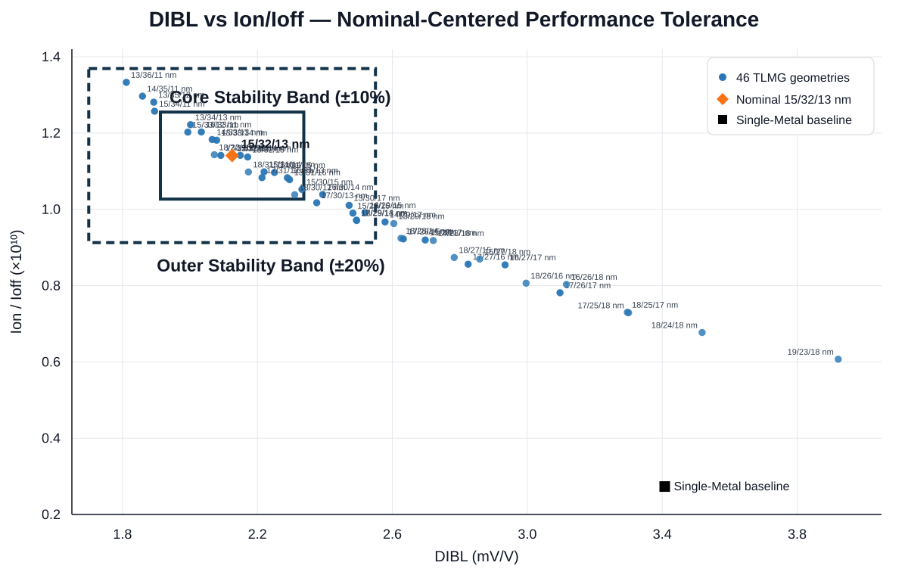
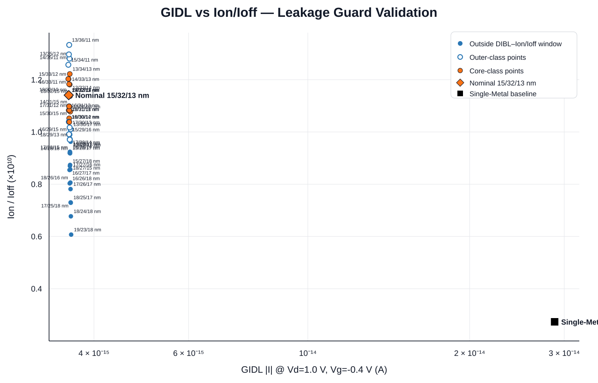

01 · OVERVIEW
프로젝트 개요
고집적 DRAM의 4F² 구조를 위한 vertical-channel access transistor(VCAT)를 대상으로, 선행 연구 [7]에서 제시된 Low–High–Low Three-Layer Work-Function Gate를 TCAD로 단계적으로 검증했습니다. TLMG 구조의 성능 검증과 이론적 해석을 수행하고, 실제 공정에서의 적용 가능성을 보완하기 위해 gate segmentation variation에 대한 성능 허용 범위를 정량화하였습니다.
Summary. This TCAD study evaluates the performance and physical behavior of the Low–High–Low three-layer metal-gate VCAT described in prior work [7] and quantifies a gate-segmentation performance tolerance window to assess its practical applicability.
SMG–TLMG 정량 성능 비교
| Metric | SMG baseline | TLMG nominal | 변화 |
|---|---|---|---|
| Ion | 8.476 × 10−6 A | 1.047 × 10−5 A | +23.57% |
| Ioff | 3.101 × 10−15 A | 9.180 × 10−16 A | −70.40% |
| Ion/Ioff | 2.733 × 109 | 1.141 × 1010 | +317.45% |
| SS | 60.046 mV/dec | 60.028 mV/dec | −0.03% |
| DIBL | 3.407 mV/V | 2.125 mV/V | −37.63% |
| GIDL | 2.879 × 10−14 A | 3.590 × 10−15 A | −87.53% |
02 · BACKGROUND
연구 배경
VCAT은 channel을 수직 방향으로 형성해 DRAM cell footprint 축소에 유리하지만, 높은 Ion과 낮은 Ioff, 작은 DIBL, 안정적인 subthreshold 특성, storage-node 측 GIDL 억제를 동시에 만족해야 하는 trade-off가 존재합니다. 위치에 따라 work function을 분리하는 multi-WF gate는 channel barrier와 junction electric field를 공간적으로 조절할 수 있는 설계 수단입니다. 그러나 실제 VCAT gate 형성 공정에서는 세 금속 경계를 설계한 위치에 정확히 형성하기 어렵습니다. 관련 선행연구의 공정 변동 사례에서 참고한 약 2–5 nm 수준의 형상 편차를 고려하여, 이러한 변동에서도 TLMG VCAT의 성능이 얼마나 강건하게 유지되는지 평가하고 공정 tolerance window를 제시하고자 하였습니다.
문제 정의
03 · RESEARCH METHOD
연구 방식 분석
04 · DESIGN ANALYSIS
물리적 타당성 분석


TLMG의 물리적 타당성을 검증하기 위해 Planar Dual-WF MOSFET 시험 구조에서 WF 크기와 공간적 배치가 channel barrier와 carrier injection에 미치는 영향을 확인했습니다. 단순 금속 일함수의 평균값에 의한 영향인지, 실제 금속 배치에 의한 영향인지 계면 특성을 비교하여 정성·정량 분석하였습니다.
기준 소자 분석


논문 benchmark를 기준으로 구현한 TiN 4.70 eV Single-Metal VCAT을 이후 모든 개선율과 구조 비교의 baseline으로 고정했습니다.
일함수 조합 분석


20/20/20 nm L-H-L 구조에서 10개 WF 조합을 비교하고 Ion, Ioff, DIBL, GIDL과 barrier 특성을 함께 검토해 Ti / TiN / Ti = 4.33 / 4.70 / 4.33 eV를 선정했습니다.
형상 최적화 분석
형상 변수 정의
Xbnd1과 Xbnd2는 x = 20–80 nm 게이트 영역에서 금속 구간을 나누는 경계 위치입니다.
단위: nm · 그림은 nominal 15/32/13 nm 기준


Xbnd1과 Xbnd2를 2 nm 간격으로 변화시켜 총 49개 geometry를 비교했습니다. 중앙 High-WF 구간 M2가 지나치게 짧아질수록 Ioff와 DIBL이 빠르게 악화되는 경향을 확인했고, 단일 최고점이 아닌 다중 지표의 균형을 기준으로 Xbnd1/Xbnd2 = 35/67 nm, 즉 15/32/13 nm를 nominal로 선정했습니다.
05 · VALIDATION
변수화 검증 분석


Boundary 변화 시 구조·contact·local mesh가 의도대로 이동하는지 확인해 variation sweep의 기하학적 신뢰성을 점검했습니다.
2D–3D 검증 분석
대규모 geometry sweep은 계산 효율을 위해 2D cylindrical axisymmetric model로 수행하고, Single-Metal과 nominal TLMG를 full-3D로 추가 계산해 같은 metric의 개선 방향을 비교했습니다.
아래 수치는 2D와 3D를 서로 직접 비교한 값이 아니라, 각각의 차원에서 확정된 Single-Metal Gate baseline을 대조군으로 두고 TLMG VCAT의 상대적인 성능 변화를 정리한 것입니다.
| Metric | 2D | Full 3D |
|---|---|---|
| DIBL | −37.64% | −38.97% |
| Ion | +23.57% | +22.97% |
| Ioff | −70.40% | −65.83% |
| Ion/Ioff | +317.45% | +259.85% |
| GIDL | −87.53% | Not simulated |
민감도 분석

국소 민감도와 boundary interaction을 확인한 뒤 tolerance study의 독립 변수를 Xbnd1과 Xbnd2로 유지했습니다.
06 · ROBUSTNESS
공정 변동 분석

Nominal 35/67 nm 주변을 1 nm 단위로 세분화하여 총 46개 geometry를 평가했습니다. 각 geometry에서 Forward 0.05 V, Forward 1.0 V, GIDL 조건을 계산해 총 138회의 SDevice run을 수행했습니다.
일관된 악화 방향은 high-Xbnd1 / low-Xbnd2, 즉 중앙 High-WF M2가 짧아지는 방향이었습니다. 이 방향에서 DIBL과 Ioff가 증가하고 Ion/Ioff가 감소해 nominal 주변의 design margin이 비대칭적으로 형성됐습니다.
07 · PROPOSAL
성능 변화 허용 범위

46개 geometry를 DIBL–Ion/Ioff 성능 평면에 재배치하고 nominal TLMG를 중심으로 Core ±10%, Outer ±20% band를 정의했습니다. Single-Metal baseline은 TLMG의 성능 우위를 확인하기 위한 비교 기준이며, tolerance band 자체는 nominal TLMG 대비 성능 변화량으로 정의했습니다.
GIDL 강건성 분석

동일한 46개 geometry를 GIDL–Ion/Ioff 평면에 다시 배치했습니다. 이는 새로운 tolerance window가 아니라, 앞서 정의한 허용 범위에서 GIDL suppression이 유지되는지를 확인하는 독립적인 leakage guard 검증입니다. GIDL은 약 3.583×10⁻¹⁵–3.627×10⁻¹⁵ A의 좁은 범위에 분포했고, 최악 조건에서도 Single-Metal Gate보다 87.40% 이상 낮게 유지되었습니다.
형상 허용 범위
성능 평면의 통과점을 다시 Xbnd1–Xbnd2 공간에 대응시키고, 내부 모든 조합이 실제 계산되어 통과한 nominal 포함 최대 observed-grid rectangle을 대표 geometry window로 사용했습니다.
| Window | Xbnd1 | Xbnd2 |
|---|---|---|
| Core | 33–35 nm | 65–67 nm |
| Outer | 33–36 nm | 65–67 nm |
해당 데이터를 통해 확인한 성능 허용 범위는 참고한 2–5 nm 수준의 공정 형상 편차 규모 내에 있습니다. 다만 2–5 nm의 모든 경계 오차가 이 허용 범위에 포함된다는 의미는 아닙니다.
08 · RESULTS
결과
2–5 nm 수준의 gate 형상 오차를 고려할 때, 본 연구에서 확인한 성능 허용 범위는 그중 일부 경계 편차에 대해 공정 강건성이 유지됨을 보여줍니다. 허용 범위 밖의 형상에서도 Ion과 누설 관련 지표 등에서 Single-Metal Gate 대비 개선이 관찰되었으며, GIDL은 평가한 46개 형상 모두에서 SMG보다 낮게 유지되었습니다. 이를 통해 TLMG가 성능상 이점과 게이트 분할 오차에 대한 강건성 확보 가능성을 지닌다는 점을 확인했습니다.
09 · LIMITATIONS
한계
- Tolerance window는 2D axisymmetric model 기반입니다.
- Geometry variation은 확률분포가 아닌 deterministic grid sweep입니다.
- Core ±10% / Outer ±20%는 산업 표준 수율 기준이 아니라 nominal 대비 electrical deviation 기준입니다.
- GIDL은 mesh에 민감하였기에 신뢰도가 감소할 수 있습니다.
- Gate-oxide tunneling과 interface trap을 포함하지 않아 leakage-derived metric은 모델 범위 내 상대 지표입니다.
- Full-3D tolerance sweep과 statistical process variation은 후속 연구 대상입니다.
10 · RECORDS
공동 연구 기록
본 프로젝트는 숭실대학교 학생 5인이 공동 수행하였습니다. 저는 해당 프로젝트의 총 팀장으로서 아이디어 제안 및 연구 계획 확립, 데이터 분석 및 결과 제시를 맡았습니다. 아래 링크를 통해 팀의 작업 기록을 확인할 수 있습니다.
발표 결과
본 연구는 2026 차세대반도체 경진대회에서 포스터 최종 발표를 진행하였습니다. 최종적으로 장려상을 수상했으며, 추가 후속 연구를 통해 연구를 발전시킬 예정입니다.

참고 문헌
- A. Spessot and H. Oh, “1T-1C dynamic random access memory status, challenges, and prospects,” IEEE Trans. Electron Devices, vol. 67, no. 4, pp. 1382–1393, 2020.
- K. K. Min, S. Hwang, J.-H. Lee, and B.-G. Park, “Vertical inner gate transistors for 4F² DRAM cell,” IEEE Trans. Electron Devices, vol. 67, no. 3, pp. 944–948, 2020.
- H. Liang et al., “Improved parasitic capacitance-predictively aware DTCO: Enhanced cell efficiency with manufacturability and scalability for 4F² VCT-based DRAM,” IEEE Trans. Electron Devices, vol. 71, no. 7, pp. 4132–4137, 2024.
- D. Kim, S. Jung, M. Kim, Y. Choi, and J. Lee, “Dual-material-gate engineering for GIDL suppression and pillar aspect-ratio reduction in 4F² vertical DRAM cell transistors,” Nanotechnology, vol. 37, 335201, 2026. doi:10.1088/1361-6528/ae9481
- A. Schenk, “Suppression of gate-induced drain leakage by optimization of junction profiles in 22 nm and 32 nm SOI nFETs,” Solid-State Electron., vol. 54, pp. 115–122, 2010. doi:10.1016/j.sse.2009.12.005
- S. Kim, Y. Seo, J. Lee, M. Kang, and H. Shin, “GIDL analysis of the process variation effect in gate-all-around nanowire FET,” Solid-State Electron., vol. 140, pp. 59–63, 2018. doi:10.1016/j.sse.2017.10.017
- S.-Y. Lee, K.-N. Park, S. Kim, and J.-K. Han, “Three-layer work-function gate for suppressing floating-body effects on vertical-channel DRAM access transistors,” Appl. Phys. Lett., vol. 128, 123304, 2026. doi:10.1063/5.0320207
- S. Xiong and J. Bokor, “Sensitivity of double-gate and FinFET devices to process variations,” IEEE Trans. Electron Devices, vol. 50, no. 11, pp. 2255–2261, 2003. doi:10.1109/TED.2003.818594
- H. R. Khan, D. Mamaluy, and D. Vasileska, “Simulation of the impact of process variation on the optimized 10-nm FinFET,” IEEE Trans. Electron Devices, vol. 55, no. 8, pp. 2134–2141, 2008. doi:10.1109/TED.2008.925937
- M. Nawaz, S. Decker, L.-F. Giles, W. Molzer, and T. Schulz, “Evaluation of process parameter space of bulk FinFETs using 3D TCAD,” Microelectron. Eng., vol. 85, pp. 1529–1539, 2008. doi:10.1016/j.mee.2008.02.014
- M. Sun, H. W. Baac, and C. Shin, “Simulation study: The impact of structural variations on the characteristics of a buried-channel-array transistor (BCAT) in DRAM,” Micromachines, vol. 13, 1476, 2022. doi:10.3390/mi13091476
- X. Zhang, D. Connelly, P. Zheng, H. Takeuchi, M. Hytha, R. J. Mears, and T.-J. King Liu, “Analysis of 7/8-nm bulk-Si FinFET technologies for 6T-SRAM scaling,” IEEE Trans. Electron Devices, vol. 63, no. 4, pp. 1502–1507, 2016. doi:10.1109/TED.2016.2523885
- Y. Sun and V. Kursun, “N-type carbon-nanotube MOSFET device profile optimization for very large scale integration,” Trans. Electr. Electron. Mater., vol. 12, no. 2, pp. 43–50, 2011. doi:10.4313/TEEM.2011.12.2.43
- Y. Li and C.-H. Hwang, “DC baseband and high-frequency characteristics of a silicon nanowire field effect transistor circuit,” Semicond. Sci. Technol., vol. 24, 045004, 2009. doi:10.1088/0268-1242/24/4/045004